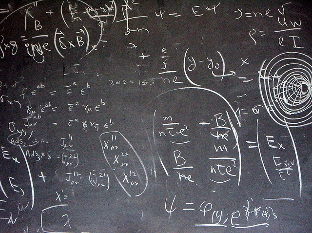

Introduction
Theoretical physics is the branch of science that attempts to explain the natural world using the language of mathematics and logical reasoning. Unlike experimental physics, where scientists gather data directly through observation and instruments, theoretical physicists build models, create equations, and explore possibilities that may or may not be immediately testable. At its heart, theoretical physics asks: what lies beneath the surface of the phenomena we observe, and how can we describe it in a consistent, universal framework?
The Role of Theoretical Physics
Physics as a discipline is often split into two complementary roles: the experimentalist and the theorist. The experimentalist constructs and performs measurements, while the theorist creates the mathematical structures that attempt to explain what is measured. Theoretical physics has given us tools like quantum mechanics, relativity, and the standard model of particle physics. These theories may sound abstract, but their impact shapes technologies from smartphones to GPS satellites. Without the work of theorists, our modern world would look very different.
Why It Matters
Theoretical physics matters because it reaches further than immediate application. It is not just about inventing devices but about understanding the underlying rules that govern everything from the smallest subatomic particles to the largest galaxies. It inspires questions about time, existence, and the structure of reality itself. For students, it can be both humbling and empowering to realize that abstract symbols and equations can reveal truths about the cosmos.
Examples of Theoretical Frameworks
- Newton’s laws of motion, which explain how forces and motion are related. - Einstein’s general relativity, which describes gravity not as a force but as the curvature of spacetime. - Quantum mechanics, which rewrote our understanding of particles, energy, and uncertainty. - Quantum field theory, which provides the framework for the standard model of particle physics.
Quiz Yourself
Quick Check
Which of the following is an example of a theoretical physics idea?